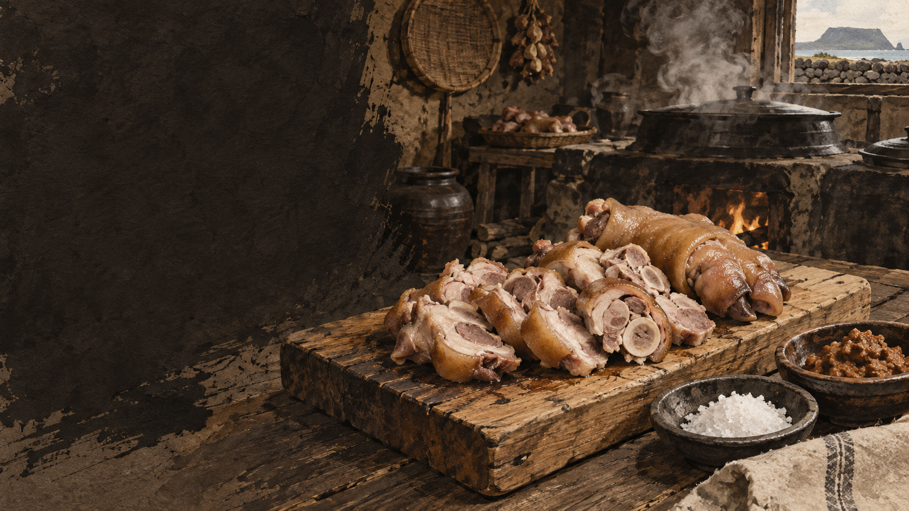

아강발
작은 돼지의 발을 가리키는 제주 생활어가 음식명이 되었습니다.

제주 음식의 생활문화를 바탕으로 제작한 기록화 · 생성 이미지
아강발은 어린 돼지 또는 작은 돼지의 발을 가리키는 제주어 음식명으로 알려져 있습니다. 정확한 크기와 범위는 조리자와 지역에 따라 조금씩 달라질 수 있습니다.
간장 양념을 진하게 입히는 일반 족발과 달리 전통적인 아강발은 깨끗이 손질해 푹 삶고 소금이나 된장을 곁들여 고기와 껍질의 맛을 살리는 설명이 많습니다.
손질과 삶기, 썰기와 양념까지 아강발이 한 접시가 되는 과정을 봅니다.
털과 발굽 주변을 깨끗이 다듬습니다.
핏물과 이물질을 충분히 제거합니다.
껍질과 힘줄이 부드러워지도록 익힙니다.
살과 껍질이 무너지지 않게 잠시 식힙니다.
소금·된장·마늘과 단순하게 먹습니다.
제주어 이름과 크기, 잔치 뒤 남은 부위를 활용한 맥락을 함께 읽습니다.
작은 돼지의 발을 가리키는 제주 생활어가 음식명이 되었습니다.
달고 진한 양념보다 삶은 살·껍질·힘줄의 질감이 중심입니다.
돔베고기와 수애 뒤에도 발까지 음식으로 이어졌습니다.
유명한 메뉴보다 왜 이런 재료와 방식이 제주 생활에 필요했는지를 먼저 묻습니다.
크기와 양념, 삶는 방식과 상에 오르는 상황을 기준으로 비교합니다.
작은 돼지족으로 설명됨
앞·뒷발을 상품 규격으로 사용
삶은 뒤 소금·된장
간장·향신 양념에 조림
담백한 살과 껍질
달고 짭짤한 양념 맛
잔치 돼지 음식과 연결
야식·안주 단독 메뉴
아강발은 남은 부위를 처리한 결과라기보다 한 마리를 완전히 나누는 잔치 부엌의 원리를 보여 줍니다.
오늘의 음식점에서는 큰 족을 쓰거나 양념을 더하기도 하므로 이름만으로 전통 조리법을 단정하지 않습니다.
돔베고기·수애·몸국·아강발은 서로 다른 메뉴이면서 한 마리의 지도입니다.
‘아강’과 부위 범위에 대한 설명은 구술마다 차이가 있습니다. 메뉴 카드에는 사용하는 족의 크기와 조리법을 함께 밝히는 편이 정확합니다.
지역·가정·생산자에 따라 설명과 조리법이 다를 수 있습니다. 현장 인터뷰를 인용할 때는 당사자의 사용 동의를 받습니다.